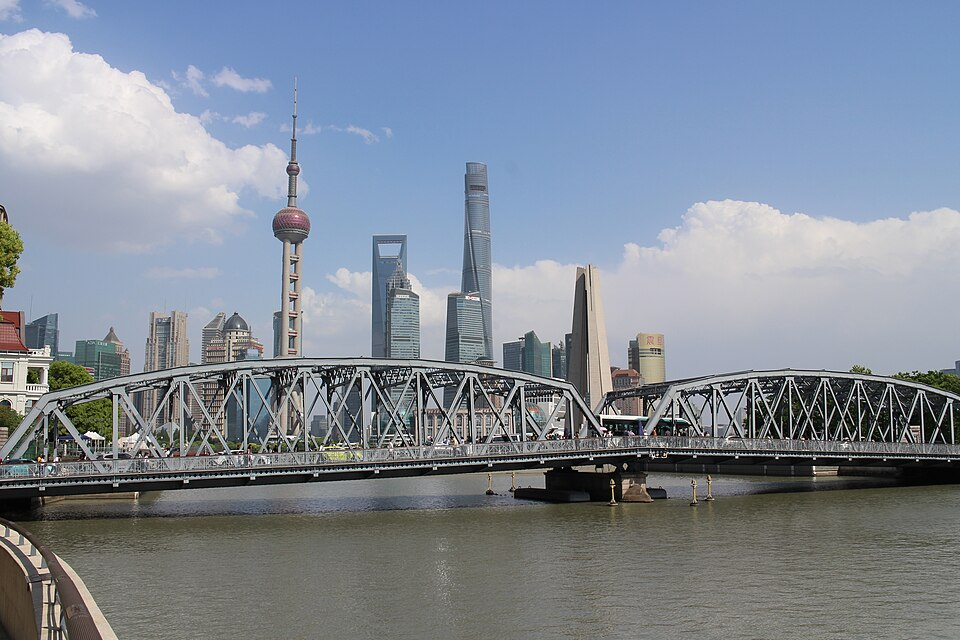
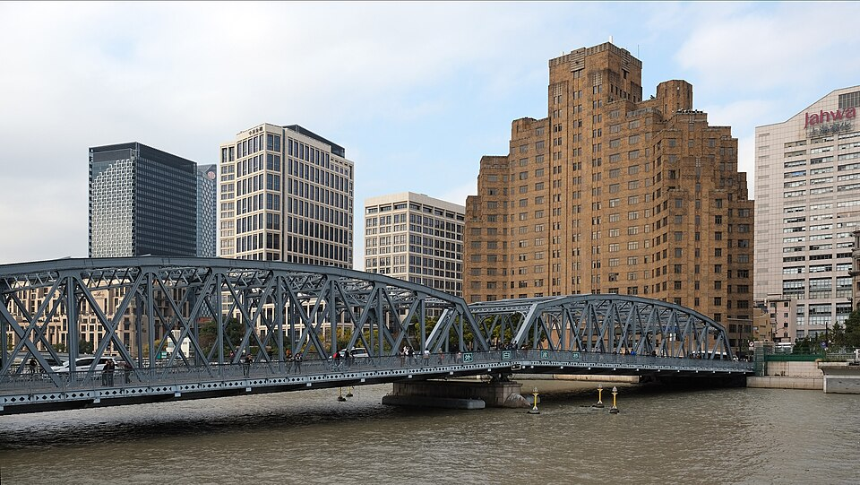
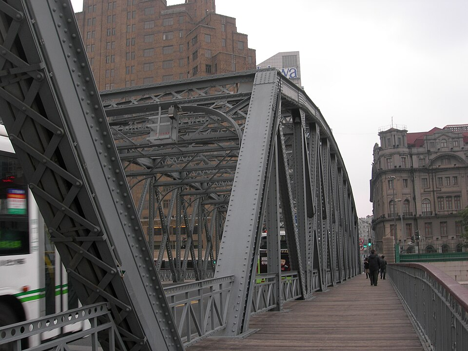
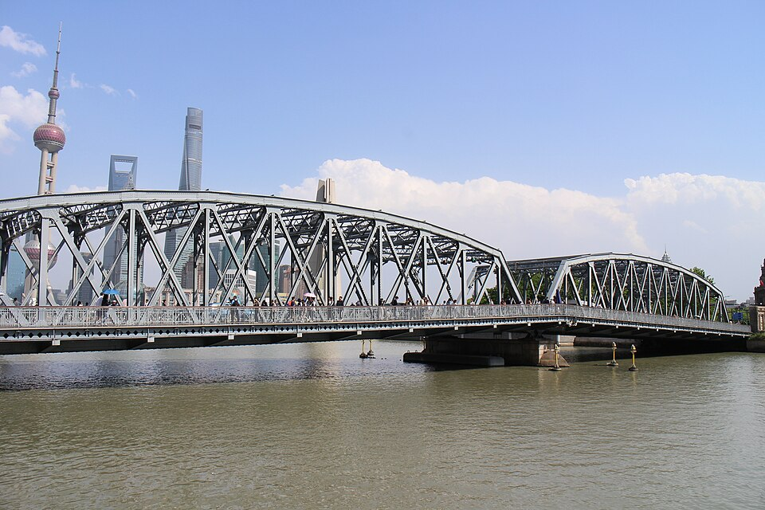

4Мост Waibaidu
外白渡桥 · Стальной мост 1908 года в конце Bund












Первый в Китае цельностальной мост, открыт 20 января 1908 года у впадения Suzhou Creek в Huangpu. Один из символов Шанхая, с 1994 года - охраняемый памятник архитектуры.
Северный конец Bund: отсюда хороший вид на набережную и на небоскрёбы Пудуна.
| Вход | бесплатно |
|---|---|
| На месте | 15-20 мин |
Источник: Wikipedia (Waibaidu Bridge). Проверено 27.10.2026 02:34 по Шанхаю.
Как добраться
- 8 мин пешком от Peace Hotel на север по набережной.
- Оттуда 15 мин пешком до метро East Nanjing Road.
Рядом

3. Набережная BundБанки и конторы 1920-30-х вдоль реки

5. Набережная Lujiazui: вид на BundДругой берег: Bund через реку, закат за ним
Фото: Wikimedia Commons, автор и лицензия под каждым. Пешие отрезки и такси: OSRM. ← ко всему плану